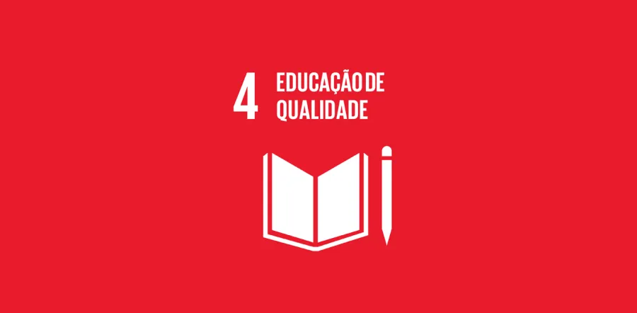

Os Objetivos de Desenvolvimento Sustentável(ODS) são um apelo global à ação para acabar com a pobreza, proteger o meio ambiente e o clima e garantir que as pessoas, em todos os lugares, possam desfrutar de paz e de prosperidade.
Este tem como meta principal: “Assegurar a educação inclusiva e equitativa e de qualidade, e promover oportunidades de aprendizagem ao longo da vida para todos.”
Através da leitura, as pessoas adquirem conhecimento, habilidades e compreensão do mundo ao seu redor, capacitando-as a atingir seu pleno potencial.
A leitura não conhece fronteiras. Ao mesmo tempo em que capacita os leitores, a leitura também se revela como uma força motriz essencial para a promoção da alfabetização. O acesso a materiais de leitura cria um ciclo virtuoso, fortalecendo a base educacional necessária para o progresso sustentável.
Ao inspirar indivíduos a se tornarem leitores ávidos, estamos investindo no empoderamento de pessoas e comunidades, contribuindo para um mundo mais igualitário e próspero.
Portanto, abracemos a leitura como uma ferramenta inspiradora para construir um futuro sustentável. Ao fazê-lo, estamos pavimentando o caminho para um mundo onde o conhecimento e a educação não são luxos restritos, mas sim direitos universais acessíveis a todos.